Rotinas – Sistema Retaguarda
Acompanhar denúncias que chegam através do Aplicativo PMRO Cidadão e ativar o Botão do Pânico.
1. Acesso ao Sistema
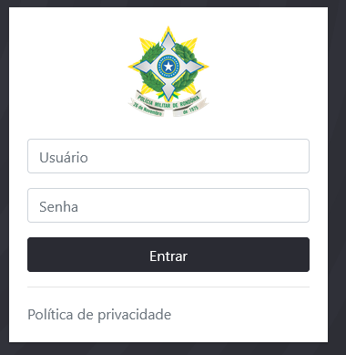
▲ Início2. Tela Inicial
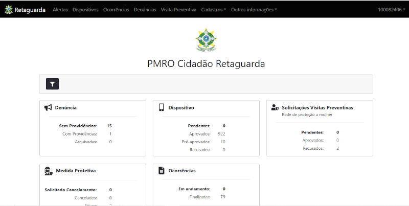
▲ Início3. Acompanhando Denúncias
Clicando no menu Denúncia tem-se acesso a todas as denúncias recebidas pelo aplicativo.
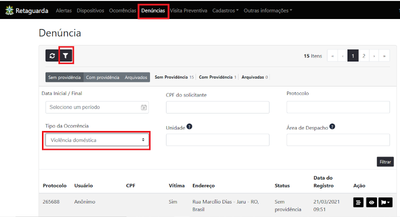
Utilizando o ícone de filtro é possível selecionar somente ocorrências de Violência Doméstica.
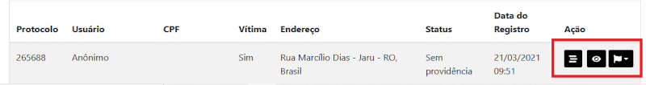
Ícones em destaque
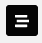
Visualiza as informações da denúncia
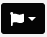
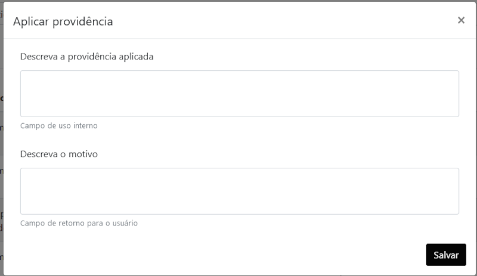
Campo de retorno ao usuário: enviar mensagem sobre as providências adotadas.
4. Visita Preventiva
Havendo solicitação pelo aplicativo de Visita Preventiva, ela aparecerá nesta tela. Deverá ser empenhada viatura da Patrulha Maria da Penha para atender a demanda.
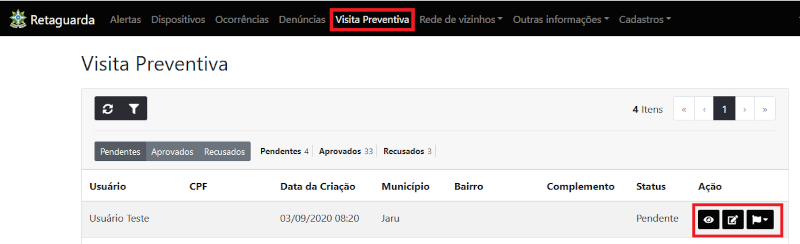
Ícones
Visualiza as informações da solicitação
Faz o agendamento da visita para a Patrulha via programação operacional
Aceita, recusa ou arquiva a solicitação
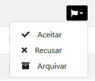
▲ Início5. Ativando o Botão do Pânico
-
Realizar a pesquisa pelo nome ou CPF da requerente
em Cadastros → Usuários do PMRO Cidadão.
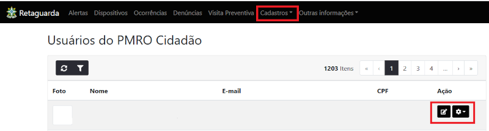
-
Clicar no ícone de ação
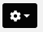
para abrir as opções.
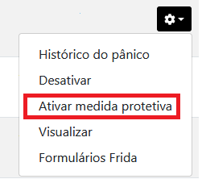
-
Será aberto o menu para adicionar o arquivo PDF da MPU.
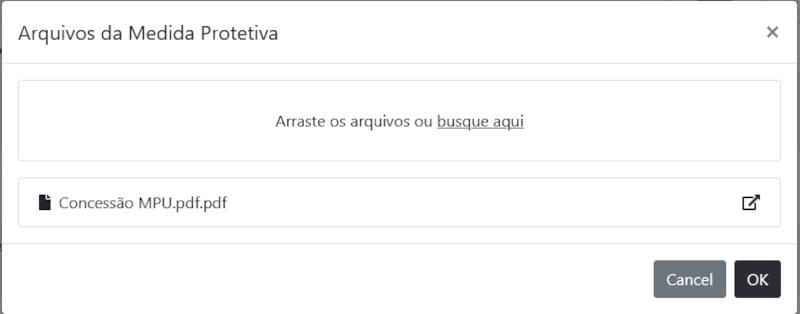
- Adicionar o arquivo PDF da MPU — o Botão do Pânico ficará ativado para a requerente.
6. Desativando o Botão do Pânico
-
Acessar o menu Cadastros → Medida Protetiva.
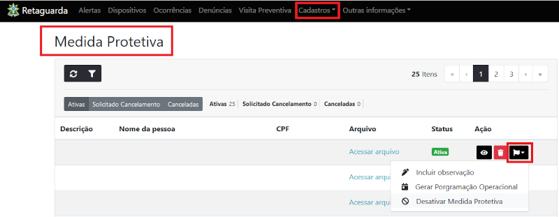
- Realizar a pesquisa pelo nome da requerente e clicar no ícone , selecionando a opção Desativar medida protetiva.
- Clicar no ícone para apagar o arquivo PDF da MPU.